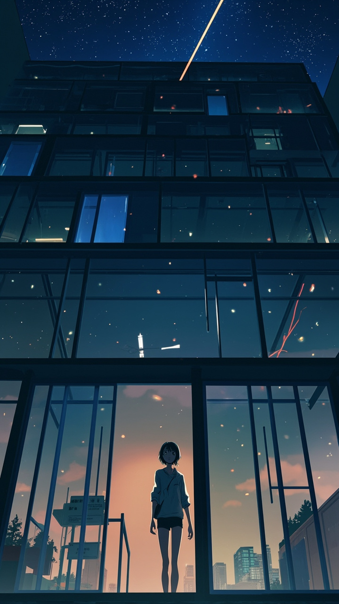

类型：都市奇幻漫剧 ｜ 时长：60 秒 ｜ 画风：现代都市 + 奇幻光效，动漫风格，9:16 竖屏
深夜 11 点，写字楼只剩 22 楼的灯还亮着。林夏（28 岁产品经理）揉了揉酸涩的眼睛，盯着屏幕上一份永远改不完的需求文档。
林夏（独白）："第 17 稿……还要改吗？"
她对着空气叹气。屏幕突然闪了一下，光标自己动了起来，组成了一个笑脸表情：
屏幕文字："我 能 帮 你。"
林夏吓了一跳，往后靠。光标裂开，从屏幕里飞出一团暖橙色的光球。光球绕着林夏转了一圈，轻轻落在她的咖啡杯上——咖啡杯瞬间变成一个发光的"AI 笔记本"，旁边还"长"出一杯热咖啡。
光球用代码雨组成一行字：
「你值得休息」
林夏愣住了，然后笑了。她合上笔记本，关掉台灯。屏幕里的光球朝她挥了挥手，化作一颗流星飞向窗外的城市夜空。画面定格在林夏走出公司、抬头微笑的背影。
画面：22 楼办公室，深夜，台灯冷光，林夏侧脸疲惫
对白：林夏（内心独白）："第 17 稿……还要改吗？"
情绪：压抑、孤独 ｜ 镜头：缓慢推近林夏侧脸
画面：电脑屏幕特写，光标突然停下，重新排列成笑脸
对白：屏幕文字（机器音）："我 能 帮 你。"
情绪：惊奇、悬疑 ｜ 镜头：固定特写屏幕，光标动效
画面：光球从屏幕里挣脱出来，绕林夏飞舞，光粒飞溅
对白：林夏："什——什么？"
情绪：惊奇、温暖 ｜ 镜头：360 度环绕运镜
画面：光球落在桌上，化作发光的"AI 笔记本"和一杯热咖啡
对白：光球显示文字：「你值得休息」
情绪：治愈、温暖 ｜ 镜头：俯拍慢慢拉近桌面
画面：林夏关灯，合上笔记本，屏幕上光球挥手告别，化作流星飞向夜空；她走出公司大门，微笑抬头
对白：林夏（画外音）："明天见。"
情绪：希望、温暖 ｜ 镜头：从室内拉到室外背影
